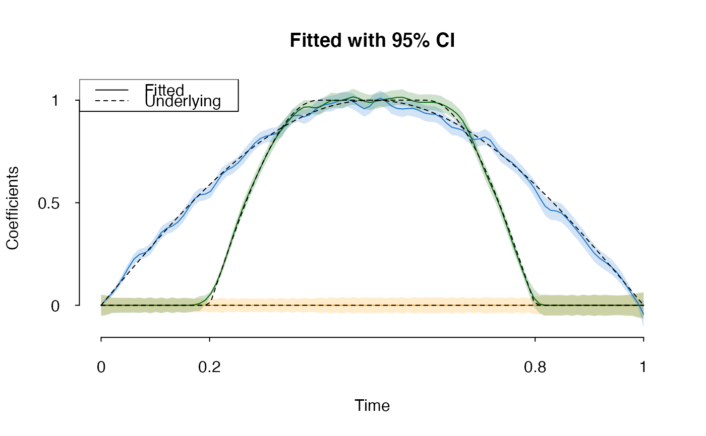

Function-on-scalar regression model, denote \(n\) as total number of observations, \(p\) the number of coefficients, \(K\) as the number of B-splines, \(T\) as total time points.
Arguments
- Y
Numeric \(n \times T\) matrix, response function.
- X
Numeric \(n \times p\) matrix, design matrix
- lambda
Regularization parameter \(\gamma\)
- time
Time domain, numerical length of \(T\)
- nsp
Integer or 'auto', number of B-splines \(K\); default is 'auto'
- ord
B-spline order, default is
4; must be \(\geq 3\)- alpha
Bridge parameter \(\alpha\), default is
0.5- W
A \(T \times T\) weight matrix or
NULL(identity matrix); default isNULL- init
Initial \(\gamma\); default is
NULL- max_iter
Number of outer iterations
- inner_iter
Number of \(ADMM\) iterations (inner steps)
- CI
Logical, whether to calculate theoretical confidence intervals
- ...
Ignored
Value
A spfda.model object (environment) with following elements:
- B
B-spline basis functions used
- error
Root Mean Square Error ('RMSE')
- CI
Whether confidence intervals are calculated
- gamma
B-spline coefficient \(\gamma_{p \times K}\)
- generate_splines
Function to generate B-splines given time points
- K
Number of B-spline basis functions
- knots
B-spline knots used to fit the model
- predict
Function to predict responses \(\beta(t)\) given new
Xand/or time points- raw
A list of raw variables
Details
This function implements "Functional Group Bridge for Simultaneous
Regression and Support Estimation" (https://doi.org/10.1111/biom.13684).
The model estimates functional coefficients \(\beta(t)\) under model
\[y(t) = X\beta(t) + \epsilon(t)\] with B-spline basis expansion
\[\beta(t) = \gamma B(t) + R(t), \] where \( R(t) \) is B-spline
approximation error. The objective function
\[
\left\| (Y-X\gamma B)W \right\|_{2}^{2} + \sum_{j,m}
\left\| \gamma_{j}^{T}\mathbf{1}(B^{t} > 0) \right\|_{1}^{\alpha}.
\]
The input response variable is a matrix. If \(y_{i}(t)\) are observed
at different time points, please interpolate (e.g.
kernel) before feeding in.
Examples
dat <- spfda_simulate()
x <- dat$X
y <- dat$Y
fit <- spfda(y, x, lambda = 5, CI = TRUE)
BIC(fit)
#> [1] 102.5317
plot(fit, col = c("orange", "dodgerblue3", "darkgreen"),
main = "Fitted with 95% CI", aty = c(0, 0.5, 1), atx = c(0,0.2,0.8,1))
matpoints(fit$time, t(dat$env$beta), type = 'l', col = 'black', lty = 2)
legend('topleft', c("Fitted", "Underlying"), lty = c(1,2))

print(fit)
#> Model: function-on-scalar with group-bridge penalty
#> Log-lik: -50042.13 (df=260)
#> E-BIC: 102.5317
#> RMSE : 1.068463
#> Parameters:
#> K: 50
#> alpha: 0.5
#> lambda: 5
coefficients(fit)
#> [,1] [,2] [,3] [,4] [,5]
#> [1,] -7.862945e-07 1.712436e-06 2.852113e-06 3.477172e-06 3.818059e-06
#> [2,] 0.000000e+00 2.922837e-02 7.746294e-02 9.444562e-02 9.582577e-02
#> [3,] -2.757821e-06 1.580555e-06 1.663040e-06 1.010232e-06 7.826380e-07
#> [,6] [,7] [,8] [,9] [,10]
#> [1,] 3.825047e-06 3.372612e-06 2.292389e-06 9.785956e-07 5.552202e-07
#> [2,] 1.239090e-01 1.779923e-01 2.247257e-01 2.519890e-01 2.763188e-01
#> [3,] 1.064108e-06 1.651406e-06 2.132294e-06 2.406164e-06 2.783026e-06
#> [,11] [,12] [,13] [,14] [,15]
#> [1,] 1.566090e-06 3.151363e-06 4.339476e-06 4.471688e-06 3.140604e-06
#> [2,] 3.093559e-01 3.475397e-01 3.852971e-01 4.172321e-01 4.392639e-01
#> [3,] 3.290937e-06 3.267436e-06 2.247530e-06 9.298384e-07 1.849375e-07
#> [,16] [,17] [,18] [,19] [,20]
#> [1,] 1.218485e-06 8.642402e-08 1.599677e-07 1.106017e-06 2.444568e-06
#> [2,] 4.567033e-01 4.784300e-01 5.037582e-01 5.248865e-01 5.440472e-01
#> [3,] 4.313412e-09 0.000000e+00 0.000000e+00 1.808391e-04 7.753477e-03
#> [,21] [,22] [,23] [,24] [,25]
#> [1,] 3.530519e-06 3.884078e-06 3.419031e-06 2.215971e-06 8.097169e-07
#> [2,] 5.766874e-01 6.253107e-01 6.615610e-01 6.651590e-01 6.648342e-01
#> [3,] 3.901124e-02 1.002559e-01 1.741348e-01 2.449419e-01 3.163592e-01
#> [,26] [,27] [,28] [,29] [,30]
#> [1,] -2.099710e-07 -6.865558e-07 -6.659158e-07 -3.181990e-07 9.706464e-08
#> [2,] 6.946893e-01 7.379873e-01 7.577807e-01 7.555608e-01 7.619630e-01
#> [3,] 3.949234e-01 4.724481e-01 5.354086e-01 5.891144e-01 6.529892e-01
#> [,31] [,32] [,33] [,34] [,35]
#> [1,] 5.346865e-07 1.230251e-06 2.260742e-06 3.307293e-06 4.039758e-06
#> [2,] 7.878243e-01 8.173040e-01 8.396148e-01 8.592281e-01 8.797865e-01
#> [3,] 7.309817e-01 8.064662e-01 8.644059e-01 8.963792e-01 9.018859e-01
#> [,36] [,37] [,38] [,39] [,40]
#> [1,] 4.297129e-06 3.984566e-06 3.183760e-06 2.064772e-06 9.364431e-07
#> [2,] 8.933599e-01 8.922352e-01 8.916876e-01 9.151255e-01 9.535413e-01
#> [3,] 9.085318e-01 9.444096e-01 9.892825e-01 1.003887e+00 9.882876e-01
#> [,41] [,42] [,43] [,44] [,45] [,46]
#> [1,] 2.064137e-07 -1.612533e-08 -1.281367e-08 -1.601709e-09 0.000000 0.000000
#> [2,] 9.736533e-01 9.694390e-01 9.710424e-01 9.942474e-01 1.017394 1.020100
#> [3,] 9.725012e-01 9.717871e-01 9.812247e-01 9.957805e-01 1.013178 1.029997
#> [,47] [,48] [,49] [,50] [,51] [,52] [,53]
#> [1,] 0.000000 0.0000000 0.0000000 0.0000000 0.0000000 0.0000000 0.0000000
#> [2,] 1.007362 0.9902674 0.9780504 0.9782572 0.9856369 0.9854002 0.9745564
#> [3,] 1.036751 1.0250389 1.0057034 0.9972092 1.0030836 1.0153099 1.0250618
#> [,54] [,55] [,56] [,57] [,58]
#> [1,] 3.417246e-10 7.381252e-08 4.548355e-07 1.228842e-06 1.797813e-06
#> [2,] 9.657484e-01 9.677216e-01 9.781920e-01 9.920147e-01 9.985696e-01
#> [3,] 1.022875e+00 1.005024e+00 9.806920e-01 9.612470e-01 9.598079e-01
#> [,59] [,60] [,61] [,62] [,63] [,64]
#> [1,] 1.524092e-06 7.398338e-07 1.749630e-07 9.226565e-09 0.0000000 0.0000000
#> [2,] 9.879958e-01 9.661590e-01 9.455300e-01 9.319814e-01 0.9261678 0.9242315
#> [3,] 9.858781e-01 1.019000e+00 1.027207e+00 1.007167e+00 0.9774607 0.9501774
#> [,65] [,66] [,67] [,68] [,69] [,70] [,71]
#> [1,] 0.0000000 0.0000000 0.0000000 0.0000000 0.0000000 0.0000000 0.0000000
#> [2,] 0.9166495 0.8991299 0.8799002 0.8659747 0.8527369 0.8337324 0.8104096
#> [3,] 0.9282070 0.9084398 0.8757469 0.8204099 0.7608577 0.7178032 0.6768302
#> [,72] [,73] [,74] [,75] [,76]
#> [1,] -2.353999e-08 -4.463881e-07 -1.887559e-06 -3.888458e-06 -4.586812e-06
#> [2,] 7.873750e-01 7.634965e-01 7.334011e-01 6.989441e-01 6.714858e-01
#> [3,] 6.101011e-01 5.244660e-01 4.528608e-01 4.026884e-01 3.473482e-01
#> [,77] [,78] [,79] [,80] [,81]
#> [1,] -3.135179e-06 -1.160435e-06 -1.883200e-07 -8.718517e-10 0.000000000
#> [2,] 6.560134e-01 6.418733e-01 6.207960e-01 6.025152e-01 0.597628588
#> [3,] 2.704374e-01 1.833840e-01 1.012731e-01 3.875723e-02 0.007702364
#> [,82] [,83] [,84] [,85] [,86]
#> [1,] 0.0000000000 0.000000e+00 0.000000e+00 0.000000e+00 0.000000e+00
#> [2,] 0.5898578752 5.530440e-01 4.933727e-01 4.414725e-01 4.091773e-01
#> [3,] 0.0001814535 2.429327e-06 2.855362e-06 3.522591e-06 4.265162e-06
#> [,87] [,88] [,89] [,90] [,91] [,92]
#> [1,] 0.000000e+00 0.000000000 0.00000000 0.00000000 0.00000000 0.00000000
#> [2,] 3.830920e-01 0.352168566 0.31436030 0.27191696 0.23940235 0.23013977
#> [3,] 1.625189e-05 0.002616067 0.01610419 0.04350613 0.06364961 0.05395874
#> [,93] [,94] [,95] [,96] [,97] [,98]
#> [1,] 0.00000000 0.000000000 0.0000000000 0.00000000 0.00000000 -2.055809e-05
#> [2,] 0.22553270 0.194956505 0.1418116596 0.09525509 0.06614346 4.069437e-02
#> [3,] 0.02619296 0.006194364 0.0003266559 0.00000000 0.00000000 4.345454e-05
#> [,99] [,100]
#> [1,] -0.004440547 -0.02736281
#> [2,] 0.005723567 -0.04694303
#> [3,] 0.009386181 0.05783799